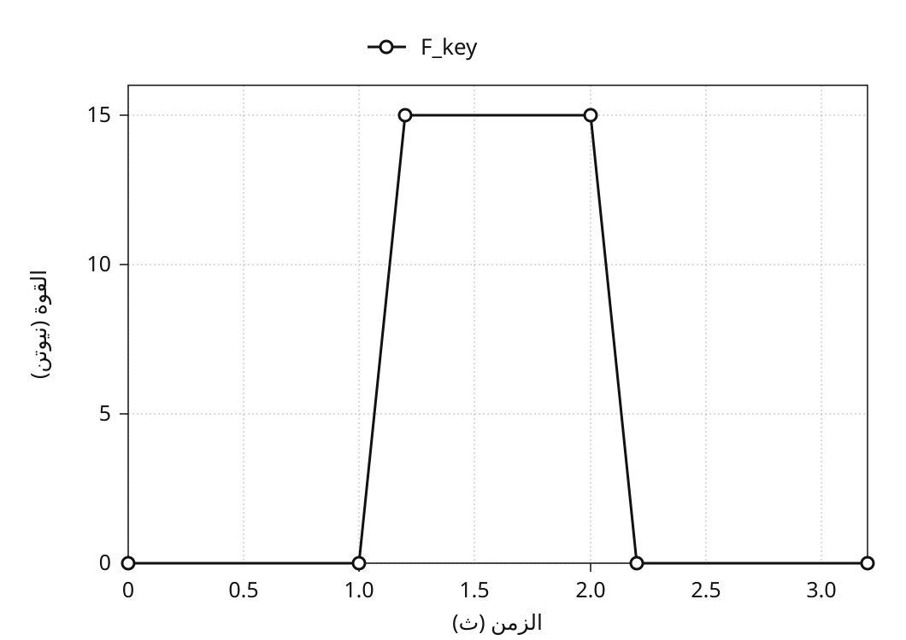
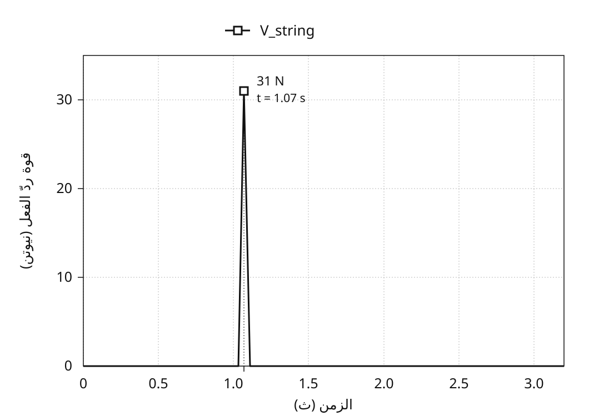

تحليل حركة آلية العزف في البيانو
يناير 2020
نظرة عامة
آلية العزف في البيانو الكبير هي نظام الروافع الذي ينقل ضغطة المفتاح إلى مطرقة ترتفع لتضرب وترًا وتجعله يهتز. أعاد هذا المشروع بناء الآلية نموذجًا ثلاثي الأبعاد في SolidWorks*، واستخدم تحليل الحركة لدراسة كيفية تحوّل المدخلات عند المفتاح إلى سرعة للمطرقة وقوة ردّ فعل عند الوتر.
نُمذجت الآلية من الصفر اعتمادًا على صور مرجعية، ثم دُرست بتحليلين: العلاقة بين سرعة المفتاح الهابطة وسرعة المطرقة الصاعدة، والعلاقة بين القوة المسلّطة على المفتاح وقوة ردّ الفعل عند الوتر. وقورنت نتائج المحاكاة بقيم نظرية حُسبت من أبعاد النموذج ومواضع محاور الدوران للتحقق من انتقال الحركة والقوة فيه.
* SolidWorks نظام للتصميم ثلاثي الأبعاد بمساعدة الحاسوب، يوفّر أدوات للتحليل الإنشائي للقطع والتحليل الحركي للآليات.


من آلية العزف إلى نموذج قابل للتحليل
الآلية التي تحوّل ضغطة واحدة إلى ضربة على وتر
آلية العزف في البيانو هي الآلية التي تحوّل حركة المفتاح إلى أسفل إلى حركة المطرقة إلى أعلى. فعند ضغط المفتاح تتحرك معًا قطعة الرفع والذراع الوسيط ولسان الدفع وذراع التكرار، فترتفع المطرقة حتى تضرب الوتر. ما يراه العازف ضغطة واحدة، أما في الداخل فتدور عدة قطع حول نقاط ارتكاز مختلفة وتتناقل الحركة فيما بينها بالتلامس.
شمل النموذج ثلاثي الأبعاد المفتاح والمطرقة ولسان الدفع والذراع الوسيط وذراع التكرار وقطعة الرفع والخامد وذراع الخامد والسلك، إلى جانب الإطار الحامل لها. ولم يكن فهم الحركة ممكنًا بالنظر إلى الشكل النهائي وحده، بل تطلّب تحديد أي قطعة تدور حول أي نقطة ارتكاز، وعند أي موضع تلامس القطعة التالية.
بناء نموذج ثلاثي الأبعاد من رسم مقطعي
نُمذجت كل قطعة من الصفر في ثلاثة أبعاد، بتتبّع حدودها فوق رسم مقطعي لآلية العزف في البيانو. ثم جُمعت القطع في تجميعة، مع ضبط علاقات التثبيت والدوران المقابلة للآلية الحقيقية بينها. وبهذه الخطوة تحوّل نموذج مخصص للنظر إلى الشكل إلى نموذج تحليلي يمكن تسليط قوة عليه وتحريكه.


التحقق من القيود بوصفها درجات حرية
باستثناء الإطار الثابت، تبلغ القطع المتحركة تسعًا، ما يعطي دون قيود 54 درجة حرية إجمالًا. وتثبيت قطعة الرفع والسلك على قطع أخرى يزيل 12 درجة، وتقييد القطع السبع الباقية بمفاصل دوران يزيل 35 درجة أخرى. وعليه تبلغ درجات حرية هذه التجميعة 7، على النحو الآتي.
54 − 12 − 35 = 7
وأظهر تشخيص القيود في SolidWorks الشيء نفسه: درجات الحرية المقدّرة والفعلية 7 في الحالتين، والقيود الزائدة صفر. وليس هذا رقمًا يحسم درجات حرية آليات عزف البيانو عمومًا، بل يؤكد أن تركيبة القطع وشروط التقييد المحددة في هذا المشروع مجمّعة كما أُريد لها.

تحليلان — كيف يتحول الضغط على المفتاح
دُرس سلوك النموذج في تحليلين منفصلين. يسأل التحليل الأول كيف تتحول سرعة حركة المفتاح إلى سرعة للمطرقة؛ ويسأل التحليل الثاني كيف تظهر القوة المسلّطة على المفتاح في صورة قوة رد فعل في جهة الوتر. وقد سهّلت دراسة كل علاقة بين الدخل والخرج على حدة تحليل نظام الروافع المعقّد، باستخدام النسب الهندسية للسرعات واتزان الرافعة.
أما أساس المقارنة فحساب نظري يُستبدل فيه بالآلية عناصر دوّارة بسيطة. فإذا تقاربت القيمة النظرية وقيمة المحاكاة أمكن الحكم بأن الحركة داخل النموذج، على الأقل، تتبع العلاقة المتوقعة من الأبعاد وشروط التقييد المحددة.

التحليل الأول — كم تتضاعف سرعة المفتاح عند المطرقة
في تحليل السرعات بُسّطت آلية العزف المعقّدة إلى ثلاثة أجسام صلبة تتناقل الحركة بالتلامس: المفتاح، والآلية الوسيطة التي مركزها الذراع الوسيط، والمطرقة. وبقراءة الحركة على أنها تنتقل تباعًا من ① إلى ③ في الشكل، يمكن حساب آلية مؤلفة من قطع كثيرة بوصفها ثلاث مراحل دوران.

تشترك جميع نقاط الجسم الصلب في السرعة الزاوية نفسها. فإذا كانت r المسافة من محور الدوران، وv السرعة الخطية عند تلك النقطة، فإن v = ωr. وبافتراض انتقال السرعة بين الأجسام دون فقد عند كل نقطة تلامس، تُحسب سرعة المطرقة بضرب نسب نصف قطر الخرج إلى نصف قطر الدخل عبر المراحل الثلاث، ثم ضرب الناتج في سرعة المفتاح.
vhammer = (r1′ r2′ r3′ / r1 r2 r3) vkey

شروط الدخل ونتائج الرصد
في SolidWorks Motion Analysis سُلّطت 5 نيوتن إلى أسفل عند طرف المفتاح، ورُصدت السرعتان الخطيتان لطرف المفتاح وللمطرقة. وبُعيد بدء تسليط القوة بلغت السرعتان القصويان 1,027 مم/ث عند المفتاح و4,284 مم/ث عند المطرقة. أي أن المطرقة تحركت في المحاكاة بنحو 4٫17 ضعف سرعة المفتاح.

| موضوع الرصد أو الحساب | السرعة |
|---|---|
| المفتاح (محاكاة) | 1,027 مم/ث |
| المطرقة (حساب نظري) | 4,614 مم/ث |
| المطرقة (محاكاة) | 4,284 مم/ث |
المقارنة بالقيمة النظرية
أنصاف الأقطار المقيسة من النموذج هي r1 = 200 مم، وr1′ = 88 مم، وr2 = 53 مم، وr2′ = 78 مم، وr3 = 16 مم، وr3′ = 111 مم. وبتعويضها في المعادلة تبلغ نسبة السرعات المثالية نحو 4٫49 ضعف، ما يتنبأ بسرعة للمطرقة قدرها 4,614 مم/ث مقابل سرعة للمفتاح قدرها 1,027 مم/ث.

كانت سرعة المطرقة في المحاكاة، البالغة 4,284 مم/ث، أقل بنحو 7% من القيمة النظرية، مع إظهار مقدار متقارب من تضاعف السرعة. يستخدم الحساب النظري ثلاثة أجسام صلبة مثالية، بينما تمثّل المحاكاة القطع منفردة. ولا يكفي الفارق العددي وحده لإثبات سببه.
التحليل الثاني — كيف تظهر قوة المفتاح في جهة الوتر
سلّط التحليل الثاني 15 نيوتن إلى أسفل على سطح المفتاح، ورصد قوة رد الفعل الظاهرة في جهة الوتر لحظة الضرب. ارتفع الدخل في جهة المفتاح Fkey ابتداءً من الثانية 1٫0 حتى بلغ 15 نيوتن، وعند لحظة الضرب ظهرت في قوة رد الفعل Vstring قمة قصوى قدرها 31 نيوتن.


للمقارنة، أُجري حساب مبسّط لاتزان رافعة باستخدام طولي الذراعين في جهة المفتاح وجهة المطرقة.
Vstring = (15 × 195) / 94 = 31.1 N
يعطي استخدام طول ذراع يبلغ 195 مم في جهة الدخل و94 مم في جهة الوتر قيمة مقارنة لاتزان رافعة ساكنة قدرها 31.1 نيوتن. وهي تزيد بمقدار 0.1 نيوتن على ذروة المحاكاة البالغة 31 نيوتن. وما زالت شروط تطبيق هذا الحساب الساكن على الذروة اللحظية لقوة ردّ الفعل عند الضربة بحاجة إلى تأكيد.

مقابلة المحاكاة بالقيم النظرية
نتيجتان متقاربتان في التحليلين
في التحليل الأول، بلغت سرعة المطرقة النظرية 4,614 مم/ث، مقابل 4,284 مم/ث في المحاكاة. وفي التحليل الثاني، بلغت قيمة المقارنة لاتزان الرافعة الساكنة 31.1 نيوتن، مقابل ذروة محاكاة قدرها 31 نيوتن. وأظهرت المقارنتان تقاربًا بين النموذج ثلاثي الأبعاد والحسابات النظرية.
تفسير الفروق
يختزل الحساب النظري الآلية إلى ثلاثة أجسام صلبة، ويفترض انتقال الحركة والقوة عبر نقاط تلامسها دون فقد. أما المحاكاة فتمثّل المكوّنات منفردة. وهذه الفروق في التمثيل مهمة عند تفسير النتائج، لكن إرجاع الفارق المتبقي إلى فقد الطاقة أو تشوّه المادة يتطلب تأكيد إعدادات المحاكاة.
الخلاصة
تقاربت المحاكاة ثلاثية الأبعاد مع المقارنات النظرية لسرعة المطرقة وقوة ردّ الفعل عند الوتر. وضمن نطاق هاتين المقارنتين، أعاد النموذج المبني من رسم مقطعي إنتاج انتقال الحركة والقوة المتوقع من الأبعاد والقيود المحدّدة.
ربط المشروع بين عدة مراحل للنمذجة: تفسير رسم مقطعي، وتحويل العلاقات بين القطع إلى قيود في برنامج التصميم بمساعدة الحاسوب، وتبسيط التجميعة إلى نموذج ميكانيكي يلائم كل تحليل.